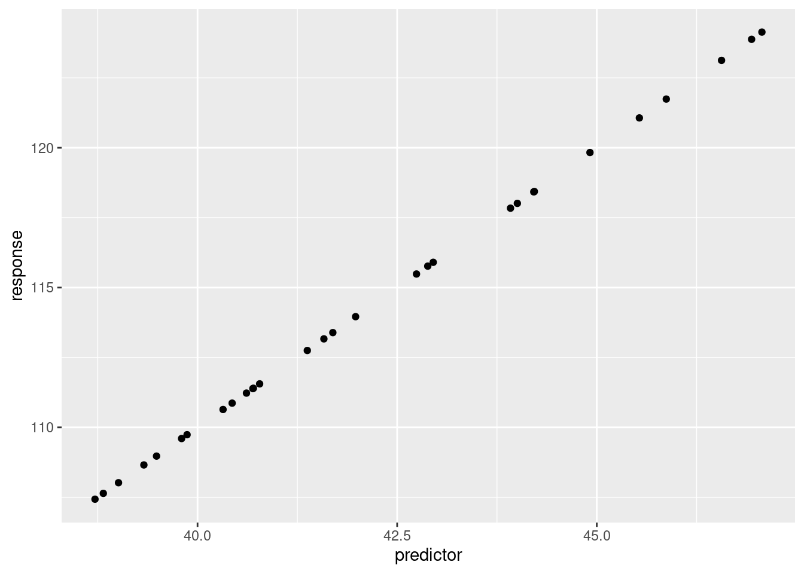
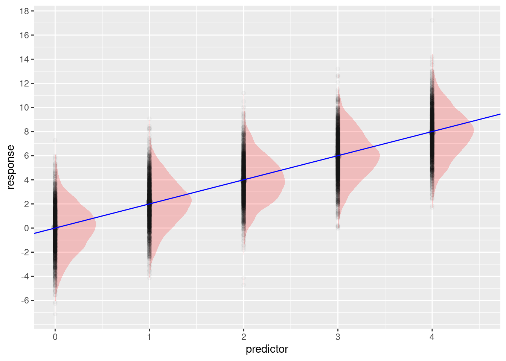
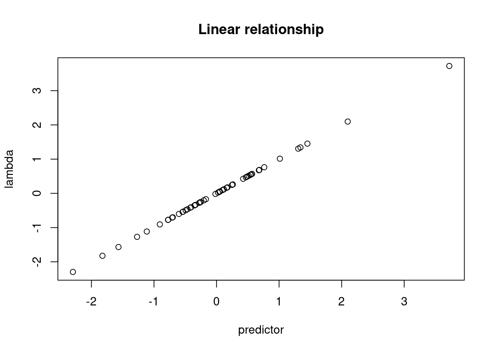
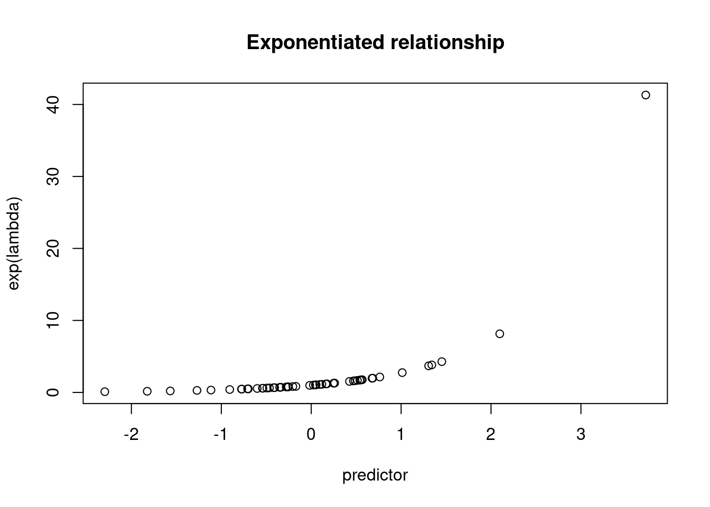

library(ggplot2)In the examples, we simulated data by building a linear model and then using the resulting vector as input to the distribution parameters.
## set up
n <- 30 # sample size
intercept <- 30 # the value of y (response) when x (predictor) is at 0.
slope <- 2 # the increase in y (response) for every increase of 1 in x (predictor)
sigma <- 1 # used to introduce error in the simulation
## simulate
### create the predictor
predictor <- rnorm(n, mean = 42, sd = 3) # simulates predictor values
mu <- intercept + (slope * predictor) # y ~ b + mx (linear relationship, no error)
response <- rnorm(n = n, mean = mu, sd = sigma)# simulates response with errorThis form of simulating is a bit confusing. We create the linear
relationship and then put it as the mean in the rnorm
function. If you just had the variable mu the model would
be a perfect fit.
## set up data frame
dat <- data.frame(
response = mu, # column 1
predictor = predictor # column 2
)ggplot(dat, aes(x = predictor, y = response))+
geom_point()
But, isn’t the variable mu a vector of values? Yes, we
can confirm that by printing out the variable contents.
mu## [1] 110.6390 108.9728 118.0108 113.9592 108.0205 107.4316 109.6006 110.8666
## [9] 111.3858 113.1651 111.5557 118.4362 109.7378 112.7495 124.1367 119.8297
## [17] 123.1256 115.4845 121.0673 117.8392 123.8786 118.4221 108.6560 115.7667
## [25] 121.7412 113.3892 111.3989 111.2257 115.9038 107.6399You can actually pass more than just a single value for the
mean= in rnorm. If you have
rnorm(n = 2, mean = c(1, 100), sd = 1), then R is going to
return 2 values, one that is sampled from a normal distribution with a
mean of 1, the second from a normal distribution with a mean of 100.
rnorm(n = 2, mean = c(1, 100), sd = 1)## [1] -0.6459354 101.8830237In our example above, we can use this to maintain the relationship
between the response and the predictor. Each value of mu
has the linear relationship that we defined. But we need a way to
introduce error. Remember, if we re-ran an experiment, the individuals
that we sample would not be the same even if the linear relationship
remained.
Here’s an example of how this works. Our predictor is an integer variable and we’ll use the integers 0 through 4. Our intercept will be 0 and our slope will be 2. So, if our \(x\) value is 0, our \(y\) should be 0. (remember, \(y = b + mx\), where \(b\) is the intercept and \(m\) is the slope, \(b=0, m = 2, x = 0\). So, \(0 + 2\times 0\)). If \(x\) is 4, \(y\) should be 8 (\(b=0, m = 2, x = 4\). So, \(0 + 2\times 4\)). Because there is random variation, we don’t expect to always get 8 if \(x = 4\), but we would expect that if we repeated the sampling over and over, we would get lots of values close to 8 with values above and below 8 being less common the further they are from 8. In this example, we have done that:
## set up
n <- 10000 # sample size
intercept <- 0 # the value of y (response) when x (predictor) is at 0.
slope <- 2 # the increase in y (response) for every increase of 1 in x (predictor)
sigma <- 2 # used to introduce error in the simulation
## simulate
### create the predictor
predictor <- rep(0:4, length.out = n) # simulates predictor values
mu <- intercept + (slope * predictor) # y ~ b + mx (linear relationship, no error)
response <- rnorm(n = n, mean = mu, sd = sigma)# simulates response with error
## set up data frame
dat <- data.frame(
response = response, # column 1
predictor = predictor # column 2
)
ggplot(dat, aes(x = predictor, y = response))+
ggdist::stat_halfeye(alpha = 0.2, width = 0.5, fill = 'red')+
geom_point(alpha = 0.025)+
geom_abline(slope = slope, intercept = intercept, color = 'blue')+
scale_x_continuous(breaks = c(0:9))+
scale_y_continuous(breaks = seq(-6, to = 26, by = 2))
The predictor variable is a vector of 10000 values with the numbers 0 - 4 repeating.
head(predictor, n = 20)## [1] 0 1 2 3 4 0 1 2 3 4 0 1 2 3 4 0 1 2 3 4Each of these “\(x\)” values goes
into the linear model, because there is no error in this model the
values in mu are also repeating:
head(mu, n = 20)## [1] 0 2 4 6 8 0 2 4 6 8 0 2 4 6 8 0 2 4 6 8By using rnorm() (or other random functions) we get
random variation. This is what we see in the plot above.
At their core, “generalized” linear models (or glms) are based on normal linear models but are useful when you expect that your response comes from a non-normal distribution. For example, counts typically have a Poisson distribution (they can only be integers, can’t have negative values, so a normal distribution is a poor fit). These models still use the linear formula, but then need a “link function” to put the linear fit on the appropriate scale. That is, they “link” the linear model to the appropriate distribution.
To illustrate, if you try to put a negative value into the
mu parameter for rnorm, you will have no
problems. But, if you try this with rpois, you will get an
NA and a warning.
rnorm(n = 1, mean = -1)## [1] -2.483262rpois(n = 1, lambda = -1)## Warning in rpois(n = 1, lambda = -1): NAs produced## [1] NASo, we have to find a way to get the linear model outcome onto a positive scale. One way we can do this is to exponentiate the values.
exp(-2)## [1] 0.1353353n <- 50 # sample size
intercept <- 0 # the value of y (response) when x (predictor) is at 0.
slope <- 1 # the increase in y (response) for every increase of 1 in x (predictor)
## simulate
### create the predictor
predictor <- rnorm(n, mean = 0, sd = 1) # simulates predictor values
lambda <- intercept + (slope * predictor) # linear model
plot(lambda ~ predictor)
title("Linear relationship")
plot(exp(lambda) ~ predictor)
title("Exponentiated relationship")
These values can now be put into the rpois function and
we get integer values returned.
# without exponentiation
head(rpois(n = n, lambda = lambda))## Warning in rpois(n = n, lambda = lambda): NAs produced## [1] NA NA 0 0 NA 0# with exponentiation
head(rpois(n = n, lambda = exp(lambda)))## [1] 1 2 3 1 0 2For simulation, we think of putting the linear relationship onto an exponentiated scale, but we’re working “backwards”. The real world measurements that we are trying to simulate are on an integer scale. In order to apply a linear model we have to put the values onto the log scale, which is why this is called a “log” link. The inverse of taking the log is exponentiation.
================================================================================
Last update on 2022-11-08
sessionInfo()## R version 4.2.1 (2022-06-23)
## Platform: x86_64-pc-linux-gnu (64-bit)
## Running under: Ubuntu 20.04.5 LTS
##
## Matrix products: default
## BLAS: /usr/lib/x86_64-linux-gnu/blas/libblas.so.3.9.0
## LAPACK: /usr/lib/x86_64-linux-gnu/lapack/liblapack.so.3.9.0
##
## locale:
## [1] LC_CTYPE=en_US.UTF-8 LC_NUMERIC=C
## [3] LC_TIME=de_AT.UTF-8 LC_COLLATE=en_US.UTF-8
## [5] LC_MONETARY=de_AT.UTF-8 LC_MESSAGES=en_US.UTF-8
## [7] LC_PAPER=de_AT.UTF-8 LC_NAME=C
## [9] LC_ADDRESS=C LC_TELEPHONE=C
## [11] LC_MEASUREMENT=de_AT.UTF-8 LC_IDENTIFICATION=C
##
## attached base packages:
## [1] stats graphics grDevices utils datasets methods base
##
## other attached packages:
## [1] ggplot2_3.3.6
##
## loaded via a namespace (and not attached):
## [1] highr_0.9 bslib_0.4.0 compiler_4.2.1
## [4] pillar_1.8.1 jquerylib_0.1.4 tools_4.2.1
## [7] digest_0.6.29 jsonlite_1.8.0 evaluate_0.16
## [10] lifecycle_1.0.1 tibble_3.1.8 gtable_0.3.0
## [13] pkgconfig_2.0.3 rlang_1.0.5 DBI_1.1.2
## [16] cli_3.3.0 rstudioapi_0.14 yaml_2.3.5
## [19] xfun_0.32 fastmap_1.1.0 withr_2.5.0
## [22] stringr_1.4.1 dplyr_1.0.10 knitr_1.40
## [25] generics_0.1.3 sass_0.4.2 vctrs_0.4.1
## [28] tidyselect_1.1.2 grid_4.2.1 glue_1.6.2
## [31] R6_2.5.1 fansi_1.0.3 distributional_0.3.0
## [34] rmarkdown_2.16 farver_2.1.0 purrr_0.3.4
## [37] magrittr_2.0.3 ellipsis_0.3.2 scales_1.2.0
## [40] htmltools_0.5.3 ggdist_3.1.1 assertthat_0.2.1
## [43] colorspace_2.0-3 labeling_0.4.2 utf8_1.2.2
## [46] stringi_1.7.8 munsell_0.5.0 cachem_1.0.6================================================================================
Copyright © 2022 Dan C. Mann. All rights reserved.